Leticia, prazer!
Hoje estou vindo me apresentar
Um pouco da minha história :)
Quero começar te contando dos meus 15 anos, foi quando decidi que queria deixar de viver exclusivamente dentro do bairro que nasci e fazer o ensino médio no Centro e explorar a cidade.
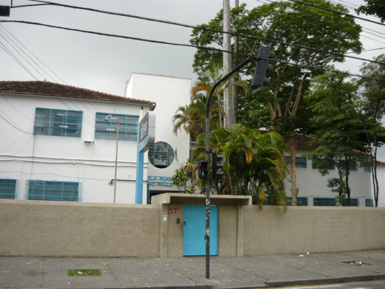 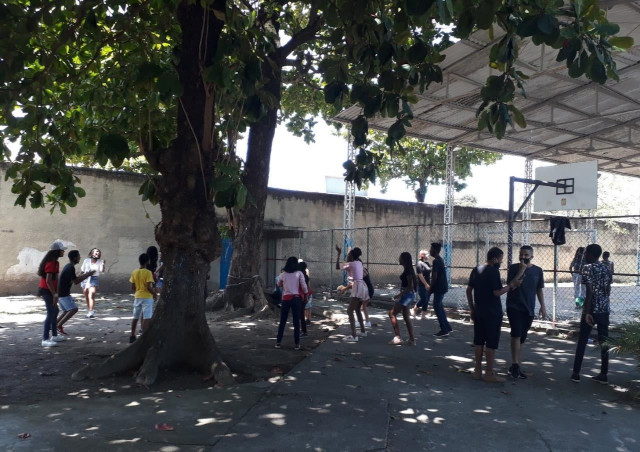 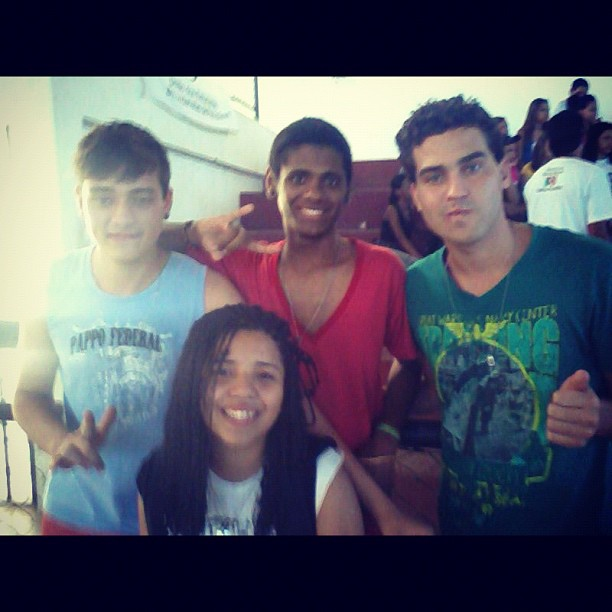Foi aí que comecei um curso de contrarregragem, a frequentar museus e livrarias. Logo me engajei em novas amizades de pessoas criativas, espontâneas, que debatiam sobre, cultura, arte, política, raça etc. Ganhei uma nova paixão pela vida e pelas conversas.
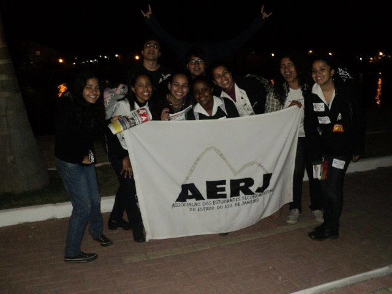 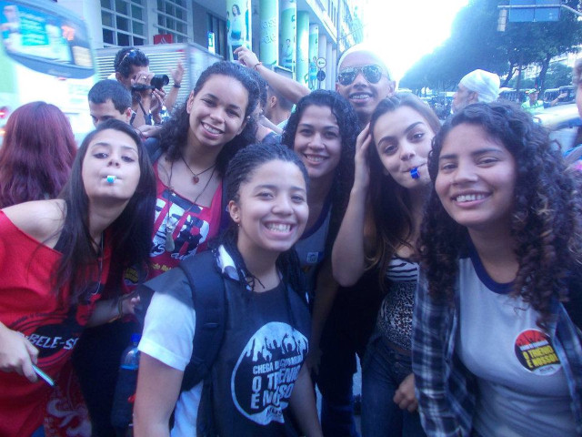 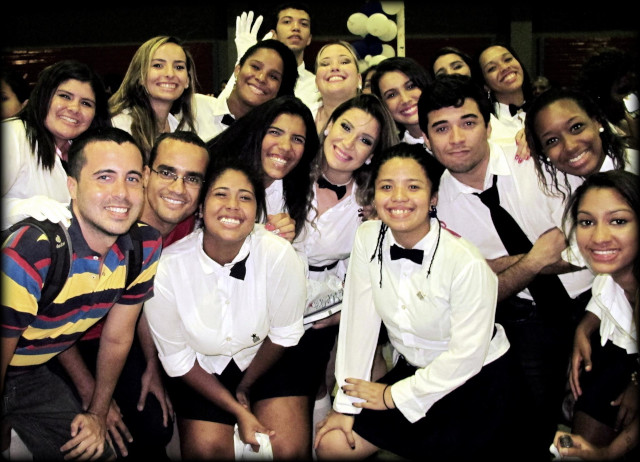Até hoje eu amo um bate papo e conhecer novos pontos de vista… Talvez por isso que eu tenha mergulhado no mundo das artes visuais e fazer disso a minha profissão.
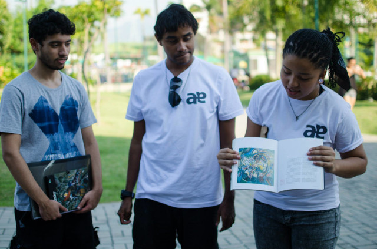 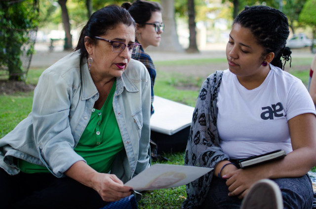 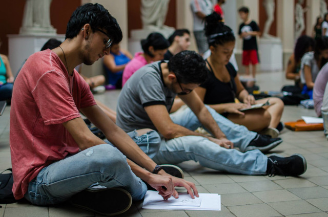 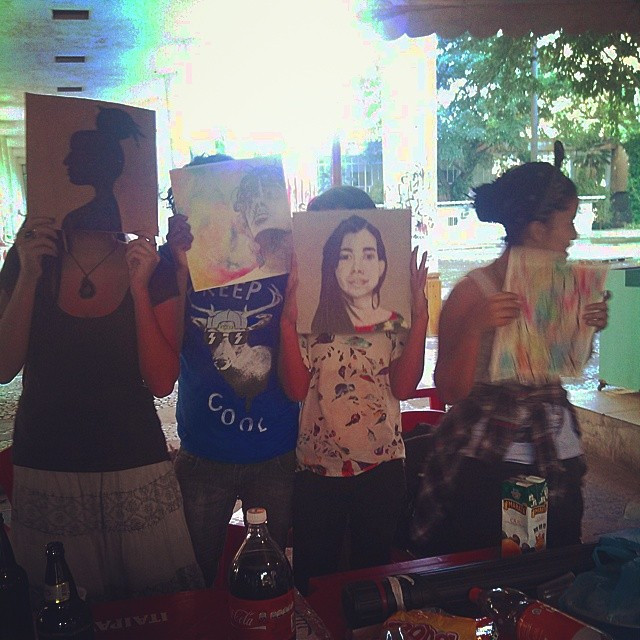 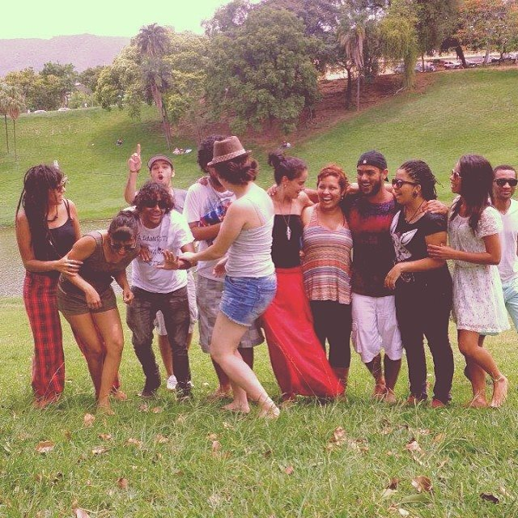 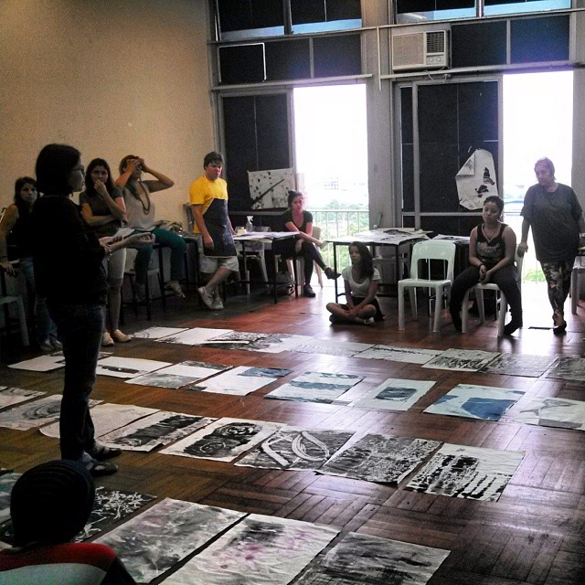Hoje tudo que aprendi lá está marcado profundamente na minha identidade e forma de perceber o mundo. Agora, com quase 30, sou casada, mãe e estudante de tecnologia.
hobbies e interesses
Amo música e artes visuais, sou iogue, metade espírita e metade budista, e até já fiz apresentações de clown. Sou apaixonada pela minha trajetória e estou pronta para continuar a escrever a minha história!
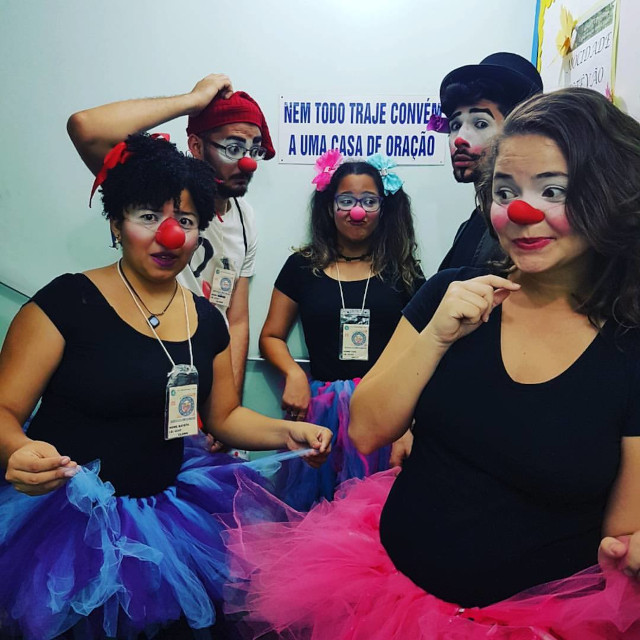 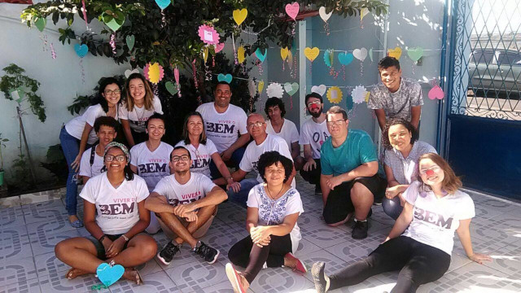 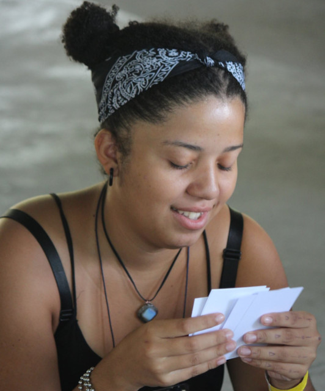 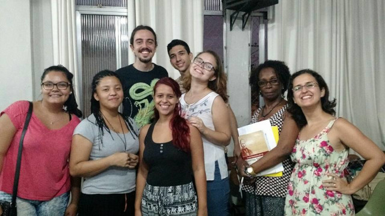